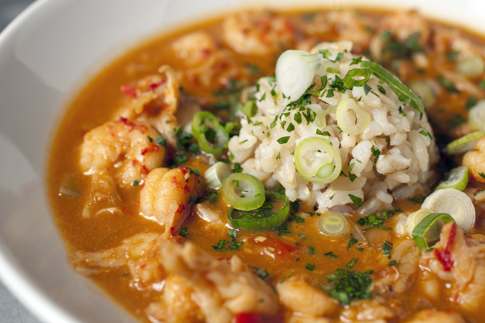

Go Back
Crawfish Etouffee
Full recipe can be found at here

Description
A classic dish in Cajun culture, crawfish étouffée is the perfect way to wind down crawfish season or entertain a large group without getting the boiling equipment out. And, as long as you have the time to let it cook properly, it’s a fairly easy dish that’s sure to impress.
At Acadia Crawfish, we love this classic crawfish étouffée recipe for how quickly it all comes together. With a little bit of love (and a Cajun’s best friend: The Cajun Trinity), you’ll have an étouffée that’ll give you a nod of approval from even the most old-school grandmére. It’s a dish that’s served at a lot of family gatherings in South Louisiana, and typically makes an appearance towards the end of the season or after a boil, as it’s a great way to use up any leftover crawfish. If you don’t have leftovers, don’t worry; our packages of tails are fully seasoned and packed with flavor that perfectly complement the rest of the ingredients.
Ingredients
- ½ stick of unsalted butter (¼ cup)
- ¼ cup all-purpose flour
- 1 small white onion, chopped (approx. 1 cup)
- ½ cup green bell pepper, chopped
- ¼ cup celery hearts, chopped
- 2tsp. minced garlic
- 2 cups chicken stock/broth (can substitute seafood stock)
- 1tsp kosher salt
- Freshly cracked black pepper, to taste
- ½tsp Cajun Bayou Blends seasoning
- 1lb. Acadia Crawfish crawfish tails
- 1tbsp. chopped fresh parsley, plus extra for garnish
- ¼ cup sliced green onion, plus extra for garnish
- Medium-Grain White Rice, for serving
Directions
- Chop the onion, green bell pepper and celery (The Cajun Trinity); parsley and green onions; then mince garlic. Set aside.
- Make a roux by melting butter in a large skillet over medium heat and stirring in the flour; cook and stir constantly (this is important otherwise your flour might burn) until caramel colored (about 4-5 minutes).
- Add the onion, bell pepper and celery; cook until soft but not translucent (about 3-4 minutes). Then, add the garlic and cook until fragrant (about 1 minute).
- Slowly stir in the stock or broth until fully incorporated. Add salt, pepper and Cajun Bayou Blends seasoning.
- Bring mixture to a boil; reduce heat to a medium-low simmer, cover and simmer for 15 minutes, stirring occasionally.
- Add the crawfish tails, cook and stir until crawfish is heated through; stir in parsley and green onion, reserving a bit for garnish.
- Serve immediately over freshly cooked rice.